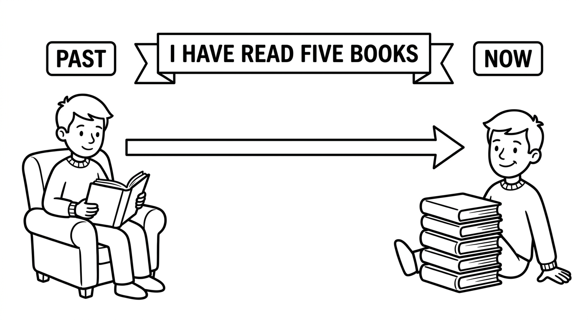
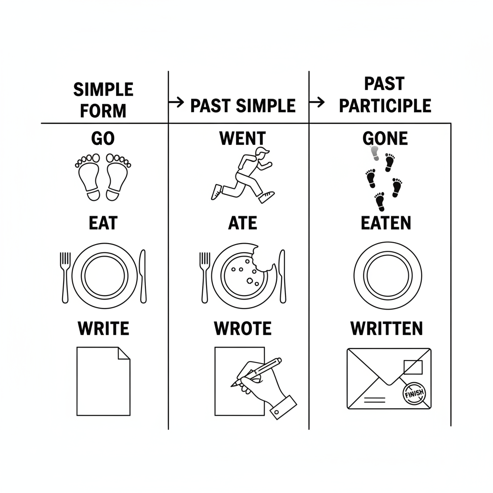
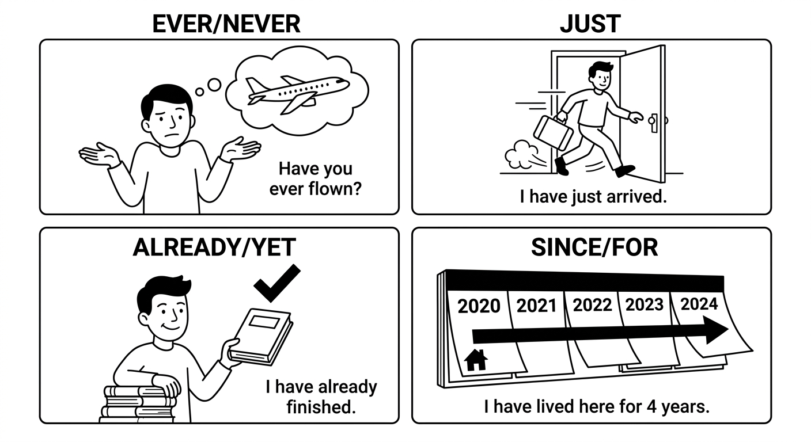
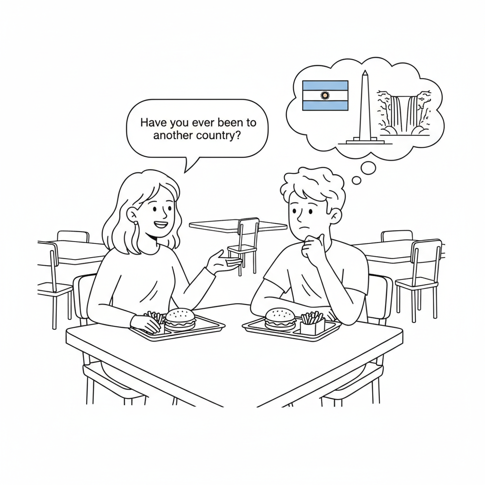
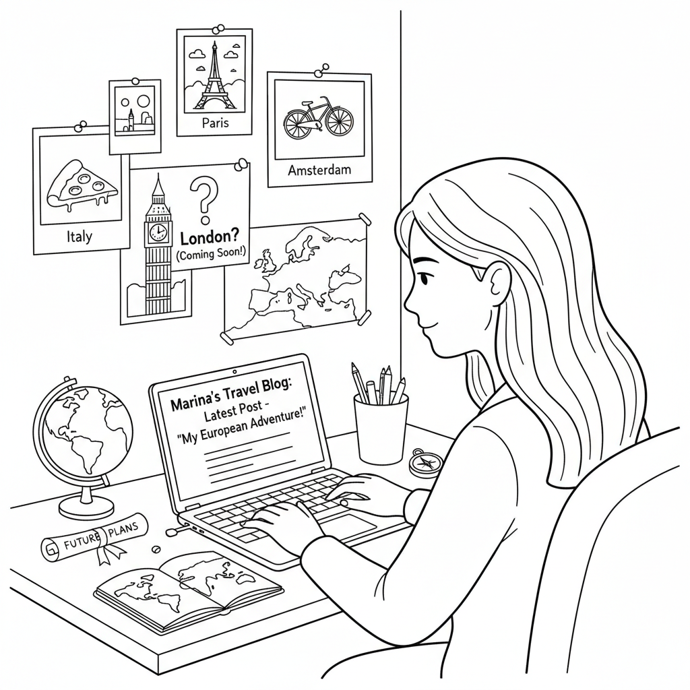

Recent Problems: Lost Luggage and Travel Experience
Use the Present Perfect to report a problem that matters now, describe what you have already tried, and answer follow-up questions with specific past details.

Report a lost item, explain what you have already done, and give the last known time and place.
| Purpose | Useful language |
|---|---|
| State the current problem | I have lost my suitcase. / My passport has disappeared. |
| Explain attempts | I have already checked the gate. / I haven't called security yet. |
| Give a specific detail | I last saw it at 6:30. / I left it beside the ticket machine. |
| Repair communication | Do you mean where I last saw it? / Could you ask that another way? |
Listen twice and write short answers.
What has Sofia lost?
She has lost a small black backpack.Where has she already checked?
She has already checked the café and Gate 18.Where and when did she last see it?
She last saw it at the café at about 7:10.0–15: mission and listening. 15–45: participle and Present Perfect formula. 45–80: one participle task plus Present Perfect/Simple Past contrast. 80–115: Mission Lab. 115–120: exit check. Use travel-blog work as extension.
Read twice: Worker: “How can I help?” Sofia: “I have lost a small black backpack.” Worker: “Where have you checked?” Sofia: “I have already checked the café and Gate 18, but I haven't called security yet.” Worker: “Where did you last see it?” Sofia: “Do you mean the last exact place?” Worker: “Yes.” Sofia: “I last saw it at the café at about 7:10.”
Past Participle
The past participle is the third form of a verb. It is used with have/has to form the Present Perfect tense.
Regular verbs: The past participle is the same as the Simple Past form. Add -ed:
- work → worked → worked
- play → played → played
- study → studied → studied
- live → lived → lived
Irregular verbs: The past participle is often different from the Simple Past form. These must be memorized:
- go → went → gone
- see → saw → seen
- do → did → done
- eat → ate → eaten
| Base Form | Simple Past | Past Participle | Português |
|---|---|---|---|
| go | went | gone | ir |
| see | saw | seen | ver |
| do | did | done | fazer |
| eat | ate | eaten | comer |
| take | took | taken | pegar/levar |
| write | wrote | written | escrever |
| speak | spoke | spoken | falar |
| give | gave | given | dar |
| break | broke | broken | quebrar |
| drive | drove | driven | dirigir |
| choose | chose | chosen | escolher |
| forget | forgot | forgotten | esquecer |
| know | knew | known | saber/conhecer |
| fly | flew | flown | voar |
| be | was/were | been | ser/estar |
| have | had | had | ter |
| make | made | made | fazer/fabricar |
| buy | bought | bought | comprar |
| read | read | read | ler |
| come | came | come | vir |

Examples: Past Participles in Sentences
I have eaten breakfast already.
Eu já tomei café da manhã.
She has written three emails today.
Ela escreveu três e-mails hoje.
We have seen that movie before.
Nós já vimos esse filme antes.
He has gone to the supermarket.
Ele foi ao supermercado.
They have spoken to the teacher about the project.
Eles falaram com a professora sobre o projeto.
Suggested time: 20 minutes
Activity: Have students create flashcards with the base form on one side and the past participle on the other. Practice in pairs: one student says the base form, the other says the past participle.
Tip: Group irregular verbs by pattern to help memorization (e.g., verbs with -en ending: eaten, written, spoken, broken, driven, chosen, forgotten, known, flown).
Write the past participle form of each verb.
Match each verb (left) with its correct past participle form (right). Write the letter in the box.
Present Perfect (have/has + past participle)
The Present Perfect is formed with have/has + past participle.
| Form | Structure | Example |
|---|---|---|
| Affirmative | Subject + have/has + past participle | I have visited Paris. |
| Negative | Subject + have/has + not + past participle | She hasn't finished yet. |
| Interrogative | Have/Has + subject + past participle? | Have you eaten lunch? |
Remember:
- Use have with I, you, we, they
- Use has with he, she, it
- Contractions: I've, you've, we've, they've, he's, she's, it's
- Negative contractions: haven't, hasn't
We use the Present Perfect to talk about:
1. Life experiences (with ever and never):
- Have you ever been to London? (at any time in your life)
- I have never eaten sushi.
2. Recent actions (with just, already, yet):
- She has just arrived. (a moment ago)
- I have already done my homework. (before now, finished)
- Have you finished yet? (by now, used in questions and negatives)
3. Unfinished time (with since and for):
- I have lived here since 2020. (from a point in the past until now)
- She has studied English for three years. (duration of time)
Examples with Time Markers
Have you ever been to another country?
Você já esteve em outro país?
I have never flown in an airplane.
Eu nunca voei de avião.
He has just left the house.
Ele acabou de sair de casa.
We have already finished the project.
Nós já terminamos o projeto.
She hasn't called me yet.
Ela ainda não me ligou.
They have lived in Belo Horizonte since 2018.
Eles moram em Belo Horizonte desde 2018.

The Present Perfect connects the past to NOW. The Simple Past talks about a FINISHED time.
- Present Perfect: I have visited Paris. (at some time in my life — no specific time)
- Simple Past: I visited Paris last year. (specific finished time)
Key rule: If you mention a specific past time (yesterday, last week, in 2020, when I was 10), use the Simple Past. If the time is not specified or not finished, use the Present Perfect.
since = a specific point in time (since Monday, since 2020, since I was born)
for = a period/duration of time (for two days, for three years, for a long time)
Dialogue: Talking About Travel

Suggested time: 30 minutes
Pre-exercise activity: Read the dialogue aloud with a student volunteer. Then ask the class: "What places has Pedro visited? Has Camila traveled abroad? Where does her grandmother live?"
Extension: Have students interview each other using "Have you ever...?" questions and report back to the class.
Fill in the blanks with the correct Present Perfect form of the verb in parentheses.
Choose the correct tense to complete each sentence.
I _______ sushi many times.
b) have eatenShe _______ to London last summer.
a) wentWe _______ in this city since 2010.
b) have livedHe _______ his phone yesterday.
a) lost_______ you ever _______ a famous person?
b) Have ... metThey _______ married in 2015.
a) gotRearrange the words to make correct Present Perfect sentences. Write the complete sentence on the line.
have / I / never / to / Japan / been
I have never been to Japan.she / finished / has / already / homework / her
She has already finished her homework.you / eaten / yet / have / dinner / ?
Have you eaten dinner yet?they / lived / have / here / 2016 / since
They have lived here since 2016.has / arrived / the / just / teacher
The teacher has just arrived.Reading: A Travel Blog

Hi, everyone! My name is Marina, and I am 22 years old. I am from São Paulo, Brazil, but I have lived in Lisbon, Portugal, since last year. I moved here to study at the university. Living abroad has been an amazing experience, and I have learned so much about different cultures.
Since I arrived in Europe, I have visited five countries. First, I went to Spain. I took a bus from Lisbon to Madrid and stayed there for four days. I have never seen a city with so much energy! I visited the Prado Museum and tried many delicious tapas. I have always loved Spanish food.
After Spain, I traveled to France. I have been to Paris twice now. The first time, I went with a friend from university. We visited the Eiffel Tower and walked along the Seine River. The second time, I went alone and spent three days exploring small cafés and bookshops. I have already decided that Paris is my favorite city in Europe.
I have also visited Italy, Germany, and the Netherlands. In Italy, I ate the best pizza I have ever tasted. In Germany, I visited Berlin and learned about its fascinating history. In the Netherlands, I rode a bicycle through Amsterdam, just like the locals. I have taken hundreds of photos on all my trips.
I haven't visited the United Kingdom yet, but I have already bought a ticket to London for next month. I have wanted to see Big Ben and Buckingham Palace since I was a child. I am so excited! Traveling has changed my life. I have met wonderful people, I have tried new foods, and I have discovered that the world is much bigger and more beautiful than I ever imagined.
Pre-reading activity: Ask students: "Have you ever traveled to another city or state? What places have you always wanted to visit?" This activates the Present Perfect before reading.
Reading strategy: Have students underline all Present Perfect verbs as they read. Ask them to notice which time markers are used (since, for, ever, never, already, yet, just).
Read each sentence. Write T (True) or F (False) based on the text.
Answer the questions using the Present Perfect. Write complete sentences based on the text.
How long has Marina lived in Lisbon?
She has lived in Lisbon since last year.How many times has Marina been to Paris?
She has been to Paris twice.What has Marina always wanted to see in London?
She has always wanted to see Big Ben and Buckingham Palace.What has traveling taught Marina about the world?
She has discovered that the world is much bigger and more beautiful than she ever imagined.Mission Lab: Report a Lost Item
Choose a lost item. Work in pairs, then switch roles.
Traveler: describe the item, say two things you have tried, and state where/when you last saw it.
Worker: ask for a description, attempts, last location, contact information, and one clarifying detail.
Mission success: the worker can complete a clear verbal report without switching to Portuguese.
If the worker's question is unclear, ask: Do you mean what I have done or where I last saw it?
In ChatGPT Voice, say: “Act as a lost property worker. I have lost an item. Ask one question at a time about its appearance, what I have already done, and where I last saw it. Speak slowly.” Offline: record a 60-second lost-item report and listen for the Present Perfect and Simple Past.
Listen for a clear problem statement, Present Perfect for current relevance, Simple Past for finished details, response to follow-up questions, and repair language.
Chapter 3 - Answer Key
Exercise 1: Write the Past Participle
Exercise 2: Match the Base Form to the Past Participle
Exercise 3: Complete with the Present Perfect
Exercise 4: Present Perfect or Simple Past?
Exercise 5: Put the Words in Order
Exercise 6: True or False
Exercise 7: Answer the Questions
Common errors to watch for:
- Confusing Simple Past and Present Perfect: "I have gone yesterday" (wrong) vs. "I went yesterday" (correct)
- Wrong participle form: "I have went" (wrong) vs. "I have gone" (correct)
- Forgetting has/have: "She written a letter" vs. "She has written a letter"
- Mixing up since/for: "since three years" (wrong) vs. "for three years" (correct)
Follow-up activity: Have students write 5 sentences about their own experiences using the Present Perfect with ever, never, already, yet, since, and for.